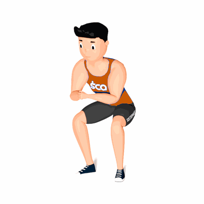

Agachamento Isométrico

O exercício é realizado de forma isométrico com o objetivo trabalhar os músculos do glúteo, lombar, quadríceps e o abdômen.
Ficha Técnica
Tipo: Funcional
Grupo Muscular: Perna
Aparelho: Nenhum
Músculos: Nenhum
Como realizar
- Primeiro, estenda seus braços para frente;
- Posicione os seus pés na mesma distância da linha dos seus ombros;
- Agache para trás, para isso, empurre os quadris para trás, abra os joelhos levemente para os lados;
- Desça até ficar em uma posição perpendicular ou atingir um ângulo reto;
- Mantenha-se nessa posição o maior tempo que aguentar;
- Volte para a posição inicial.
 RC STORE
RC STORE